CODING AGENTS AS PIXEL WORLD MODELS
traex/GPT-6.1-Sol · 0056
点击播放 · 原生 RGB 像素
逐轮保存的候选
回放视频、检查图与代码变化。
每份候选均可单独播放。实际图片检查记录在下方工具轨迹中。
候选 01播放与检查图
点击播放 · 原生 RGB 像素
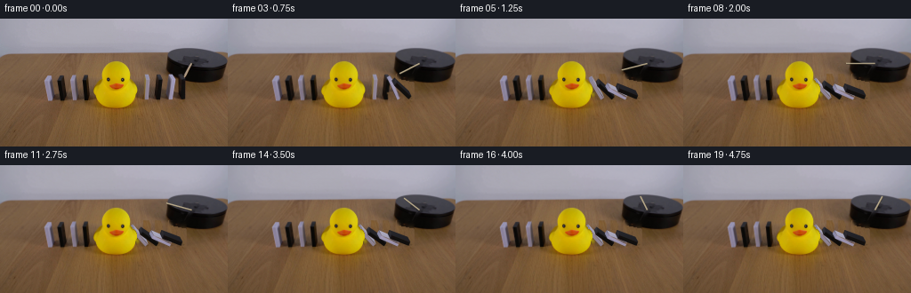
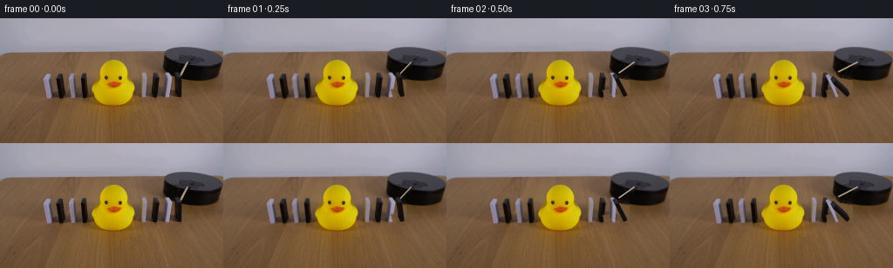
展开代码变化
--- 上一保存版本
+++ 本次保存版本
@@ -0,0 +1,204 @@
+from pathlib import Path
+import math
+import numpy as np
+import cv2
+from PIL import Image, ImageDraw
+import artifact_io
+
+ROOT=Path(__file__).resolve().parent
+W,H=256,144
+S=4
+src=np.array(Image.open(ROOT/'first_frame.png').convert('RGB'))
+rng=np.random.default_rng(311)
+# Cuboids are calibrated directly to the photograph. Units are projected pixels.
+blocks=[
+ dict(p=(163.2,91.2),w=4.05,h=23.4,lean=.8,d=(-1.9,-5.0),white=True),
+ dict(p=(175.6,91.0),w=4.1,h=22.9,lean=1.3,d=(-1.6,-5.5),white=False),
+ dict(p=(190.7,91.2),w=4.2,h=22.7,lean=2.3,d=(-3.1,-5.5),white=True),
+ dict(p=(203.3,90.5),w=4.4,h=22.2,lean=0.,d=(-2.8,-5.7),white=False),
+]
+
+def vertices(b,a):
+ c,s=math.cos(a),math.sin(a)
+ q=[]
+ for z in (0,b['h']):
+ for x,y in ((0,0),(b['w'],0),(b['w'],1),(0,1)):
+ xx=x*c-z*s; zz=x*s+z*c
+ q.append((b['p'][0]+xx+b['lean']*zz/b['h']+b['d'][0]*y,
+ b['p'][1]-zz+b['d'][1]*y-.015*xx))
+ return np.array(q,np.float32)
+
+# Small removal regions; the untouched table, duck, and other dominoes remain photographs.
+objmasks=[]
+cleanmask=np.zeros((H,W),np.uint8)
+for b in blocks:
+ q=vertices(b,0)
+ hull=cv2.convexHull(q).reshape(-1,2)
+ mm=np.zeros((H,W),np.uint8)
+ cv2.fillConvexPoly(mm,np.round(hull).astype(np.int32),255)
+ mm=cv2.dilate(mm,np.ones((3,3),np.uint8))
+ # The broad soft contact shadows to the left of the standing pieces.
+ shadow=np.zeros_like(mm)
+ p=np.array(b['p'])
+ poly=np.array([p+(-11,-8),p+(-3,-10),p+(5,-3),p+(5,2),p+(-9,-1)],np.int32)
+ cv2.fillConvexPoly(shadow,poly,255)
+ mm=np.maximum(mm,shadow)
+ objmasks.append(mm)
+ cleanmask=np.maximum(cleanmask,mm)
+rodmask=np.zeros((H,W),np.uint8)
+cv2.line(rodmask,(207,66),(215,51),255,4,cv2.LINE_AA)
+cleanmask=np.maximum(cleanmask,rodmask)
+# Inpaint narrow strips using their immediate unoccluded surroundings.
+clean=cv2.inpaint(src,cleanmask,4,cv2.INPAINT_TELEA)
+# Restore fine wood grain beneath the dominoes with locally aligned samples.
+woodmask=cleanmask.astype(np.float32)/255
+for y in range(62,95):
+ for x in range(157,210):
+ if not cleanmask[y,x]: continue
+ # The disk silhouette is deliberately preserved above its lower contour.
+ disk_boundary=66.8+(x-189)*.215 if x>=189 else -100
+ if x>=190 and y<disk_boundary: continue
+ sy=min(143,y+36)
+ sx=int(np.clip(x-4,0,255))
+ # Match the small warm illumination gradient on the table.
+ sample=src[sy,sx].astype(float)*np.array([.98,.99,1.0])
+ clean[y,x]=np.clip(.85*sample+.15*clean[y,x],0,255)
+# Local edge feathering conceals the narrow texture grafts.
+
+faces={'front':[0,1,5,4], 'left':[3,0,4,7], 'right':[1,2,6,5], 'top':[4,5,6,7]}
+textures=[]
+for b in blocks:
+ q=vertices(b,0)
+ bt={}
+ for name in ['front','left','top']:
+ points=q[faces[name]].copy()
+ center=points.mean(0)
+ points=center+(points-center)*.91
+ # Pull the original face texture into a canonical patch.
+ dst=np.float32([[0,127],[63,127],[63,0],[0,0]])
+ mat=cv2.getPerspectiveTransform(points.astype(np.float32),dst)
+ tex=cv2.warpPerspective(src,mat,(64,128),flags=cv2.INTER_LINEAR)
+ bt[name]=tex.astype(np.float32)
+ # Initially hidden face becomes the upper broad face as each piece tips.
+ yy,xx=np.mgrid[0:128,0:64]
+ if b['white']:
+ color=np.array([165.,163.,184.])
+ gradient=(.95+.065*(1-yy/127)+.055*xx/63)[...,None]
+ else:
+ color=np.array([35.,35.,40.])
+ gradient=(.90+.13*(1-yy/127)+.07*xx/63)[...,None]
+ noise=cv2.GaussianBlur(rng.normal(0,1,(128,64)).astype(np.float32),(0,0),1)[...,None]
+ bt['right']=color[None,None,:]*gradient+noise
+ textures.append(bt)
+
+# The duck interrupts the chain; collisions transmit the impulse to its right-hand neighbors.
+def dynamics():
+ dt=1/600
+ theta=np.zeros(4); omega=np.zeros(4); awake=np.zeros(4,dtype=bool)
+ result=[]
+ for step in range(round(4.75/dt)+1):
+ t=step*dt
+ if t>=.14 and not awake[3]:
+ awake[3]=True; omega[3]=1.15
+ for i in range(4):
+ if not awake[i]: continue
+ omega[i]+=dt*9.4*math.sin(theta[i])
+ theta[i]+=dt*omega[i]
+ if i==0:
+ limit=math.radians(43)
+ else:
+ p=theta[i-1]
+ gap=blocks[i]['p'][0]-blocks[i-1]['p'][0]
+ v=(blocks[i-1]['w']-gap*math.cos(p))/blocks[i]['h']
+ limit=p-math.asin(np.clip(v,-1,1))
+ if theta[i]>limit:
+ incoming=omega[i]
+ theta[i]=limit
+ if i>0 and not awake[i-1]:
+ awake[i-1]=True
+ omega[i-1]=max(1.0,incoming*.83)
+ omega[i]=omega[i-1]*.90 if i>0 else 0
+ if step%150==0: result.append(theta.copy())
+ return result
+
+angles=dynamics()
+
+
+def overlay_face(canvas,poly,texture):
+ # Counterclockwise exterior surfaces face the camera in this projection.
+ area=np.sum(poly[:,0]*np.roll(poly[:,1],-1)-poly[:,1]*np.roll(poly[:,0],-1))
+ if area>=-.1: return
+ p=poly*S
+ destination=np.float32([[0,127],[63,127],[63,0],[0,0]])
+ trans=cv2.getPerspectiveTransform(destination,p.astype(np.float32))
+ warped=cv2.warpPerspective(np.clip(texture,0,255).astype(np.uint8),trans,(W*S,H*S),flags=cv2.INTER_LINEAR,borderMode=cv2.BORDER_REPLICATE)
+ mask=np.zeros((H*S,W*S),np.uint8)
+ cv2.fillConvexPoly(mask,np.round(p).astype(np.int32),255,lineType=cv2.LINE_AA)
+ alpha=mask.astype(np.float32)/255
+ canvas[:]=canvas*(1-alpha[:,:,None])+warped*alpha[:,:,None]
+
+
+def render(t, aa):
+ if t==0: return src.copy()
+ active=[i for i,a in enumerate(aa) if a>1.e-5]
+ erase=np.array(rodmask,copy=True)
+ for i in active: erase=np.maximum(erase,objmasks[i])
+ alpha=cv2.GaussianBlur(erase.astype(np.float32)/255,(0,0),.55)
+ base=src.astype(np.float32)*(1-alpha[:,:,None])+clean.astype(np.float32)*alpha[:,:,None]
+ canvas=cv2.resize(base,(W*S,H*S),interpolation=cv2.INTER_CUBIC)
+ # New contact shadows follow the projected prisms.
+ sh=np.zeros((H*S,W*S),np.float32)
+ for i in active:
+ b=blocks[i]; q=vertices(b,aa[i])
+ ground=q.copy()
+ for j in range(8):
+ z=(b['h'] if j>=4 else 0)*math.cos(aa[i])+(b['w'] if j%4 in (1,2) else 0)*math.sin(aa[i])
+ ground[j,0]-=.23*z
+ ground[j,1]+=z*.80
+ hull=cv2.convexHull(ground).reshape(-1,2)
+ layer=np.zeros_like(sh)
+ cv2.fillConvexPoly(layer,np.round(hull*S).astype(np.int32),.16,cv2.LINE_AA)
+ layer=cv2.GaussianBlur(layer,(0,0),2.0*S)
+ sh=np.maximum(sh,layer)
+ # Sharp shadow directly at the foot.
+ cv2.ellipse(sh,(int(b['p'][0]*S),int((b['p'][1]-.8)*S)),(int(4*S),int(1*S)),0,0,360,.16,-1)
+ canvas*=1-sh[:,:,None]
+ # Motor-driven clockwise rotation in the horizontal plane of the tabletop.
+ phi=math.radians(104.7+38*t)
+ pivot=np.array([215.5,50.5])
+ tip=pivot+np.array([32.2*math.cos(phi),15.6*math.sin(phi)])
+ rod=Image.new('RGBA',(W*S,H*S))
+ d=ImageDraw.Draw(rod)
+ a=tuple((pivot*S).tolist()); end=tuple((tip*S).tolist())
+ # Fine dark occlusion and a warm wooden highlight.
+ d.line([(a[0]+1,a[1]+3),(end[0]+1,end[1]+3)],fill=(22,21,20,100),width=8)
+ d.line([a,end],fill=(134,119,92,255),width=7)
+ d.line([(a[0]-1,a[1]-1),(end[0]-1,end[1]-1)],fill=(188,174,143,255),width=5)
+ d.line([(a[0]-2,a[1]-2),(end[0]-2,end[1]-2)],fill=(205,191,163,180),width=1)
+ ra=np.array(rod).astype(np.float32); al=ra[:,:,3:]/255
+ canvas=canvas*(1-al)+ra[:,:,:3]*al
+ # Rising broad faces are newly revealed as the blocks topple.
+ for i in active:
+ b=blocks[i]; q=vertices(b,aa[i])
+ for name,inds in faces.items():
+ texture=textures[i][name]
+ if name=='right':
+ lighting=.91+.09*math.sin(aa[i])
+ texture=texture*lighting
+ elif name=='top': texture=texture*(.98-.10*math.sin(aa[i]))
+ overlay_face(canvas,q[inds],texture)
+ frame=cv2.resize(canvas,(W,H),interpolation=cv2.INTER_AREA)
+ frame=np.clip(frame,0,255).astype(np.uint8)
+ # The duck is immobile and closer to the camera than the leaning domino tips.
+ duck=((src[:,:,0]>145)&(src[:,:,1]>119)&(src[:,:,2]<85)).astype(np.float32)
+ # Limit the color segmentation to the actual duck silhouette.
+ yy,xx=np.mgrid[0:H,0:W]
+ duck*=((xx>=103)&(xx<=156)&(yy>=46)&(yy<=102))
+ duck=cv2.GaussianBlur(duck,(0,0),.22)
+ frame=np.clip(frame*(1-duck[:,:,None])+src*duck[:,:,None],0,255).astype(np.uint8)
+ return frame
+
+frames=np.stack([render(k/4,angles[k]) for k in range(20)])
+artifact_io.save(frames,ROOT)
+Image.fromarray(clean).save(ROOT/'.tmp/clean.png')
+print('Angles:', np.round(np.rad2deg(angles),1))
候选 02播放与检查图
点击播放 · 原生 RGB 像素

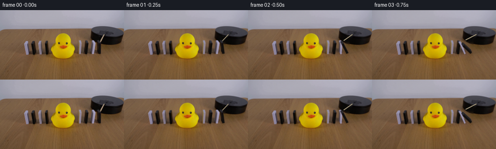
展开代码变化
--- 上一保存版本
+++ 本次保存版本
@@ -50,19 +50,23 @@
cleanmask=np.maximum(cleanmask,rodmask)
# Inpaint narrow strips using their immediate unoccluded surroundings.
clean=cv2.inpaint(src,cleanmask,4,cv2.INPAINT_TELEA)
-# Restore fine wood grain beneath the dominoes with locally aligned samples.
-woodmask=cleanmask.astype(np.float32)/255
-for y in range(62,95):
- for x in range(157,210):
- if not cleanmask[y,x]: continue
- # The disk silhouette is deliberately preserved above its lower contour.
- disk_boundary=66.8+(x-189)*.215 if x>=189 else -100
- if x>=190 and y<disk_boundary: continue
- sy=min(143,y+36)
- sx=int(np.clip(x-4,0,255))
- # Match the small warm illumination gradient on the table.
- sample=src[sy,sx].astype(float)*np.array([.98,.99,1.0])
- clean[y,x]=np.clip(.85*sample+.15*clean[y,x],0,255)
+# Reconstruct only the table, with source wood grain and a smoothly fitted
+# illumination residual so patch boundaries do not become visible.
+yy,xx=np.mgrid[0:H,0:W]
+donor=cv2.remap(src,(xx-4).astype(np.float32),np.minimum(yy+36,H-1).astype(np.float32),cv2.INTER_LINEAR,borderMode=cv2.BORDER_REFLECT).astype(np.float32)
+disk_edge=52+20*np.sqrt(np.maximum(0,1-((xx-222)/35.0)**2))
+disk_edge=np.where(xx<187,-100,disk_edge)
+wood_weight=np.clip((yy-disk_edge+.1)/1.4,0,1)
+residual=src.astype(np.float32)-donor
+# Exclude the motor and duck from the smooth table-illumination estimate.
+valid=(cleanmask==0)&(yy>42)&(wood_weight>.999)
+valid&=~((xx>103)&(xx<157)&(yy>46)&(yy<103))
+from scipy.ndimage import distance_transform_edt
+ind=distance_transform_edt(~valid,return_distances=False,return_indices=True)
+nearest=residual[ind[0],ind[1]]
+correction=cv2.GaussianBlur(nearest,(0,0),2.1)
+wood=np.clip(donor+correction,0,255)
+clean=np.clip(clean.astype(float)*(1-wood_weight[:,:,None])+wood*wood_weight[:,:,None],0,255).astype(np.uint8)
# Local edge feathering conceals the narrow texture grafts.
faces={'front':[0,1,5,4], 'left':[3,0,4,7], 'right':[1,2,6,5], 'top':[4,5,6,7]}
@@ -134,7 +138,7 @@
warped=cv2.warpPerspective(np.clip(texture,0,255).astype(np.uint8),trans,(W*S,H*S),flags=cv2.INTER_LINEAR,borderMode=cv2.BORDER_REPLICATE)
mask=np.zeros((H*S,W*S),np.uint8)
cv2.fillConvexPoly(mask,np.round(p).astype(np.int32),255,lineType=cv2.LINE_AA)
- alpha=mask.astype(np.float32)/255
+ alpha=cv2.GaussianBlur(mask,(0,0),.30*S).astype(np.float32)/255
canvas[:]=canvas*(1-alpha[:,:,None])+warped*alpha[:,:,None]
@@ -163,6 +167,16 @@
# Sharp shadow directly at the foot.
cv2.ellipse(sh,(int(b['p'][0]*S),int((b['p'][1]-.8)*S)),(int(4*S),int(1*S)),0,0,360,.16,-1)
canvas*=1-sh[:,:,None]
+ # Preserve unstruck neighbor faces even where a removed shadow overlaps them.
+ for i in range(4):
+ if i in active: continue
+ q=vertices(blocks[i],0)
+ m=np.zeros((H*S,W*S),np.uint8)
+ cv2.fillConvexPoly(m,np.round(cv2.convexHull(q).reshape(-1,2)*S).astype(np.int32),255,cv2.LINE_AA)
+ m=cv2.dilate(m,np.ones((5,5),np.uint8))
+ m=cv2.GaussianBlur(m,(0,0),.6*S).astype(np.float32)/255
+ original=cv2.resize(src,(W*S,H*S),interpolation=cv2.INTER_CUBIC)
+ canvas=canvas*(1-m[:,:,None])+original*m[:,:,None]
# Motor-driven clockwise rotation in the horizontal plane of the tabletop.
phi=math.radians(104.7+38*t)
pivot=np.array([215.5,50.5])
候选 03播放与检查图
点击播放 · 原生 RGB 像素
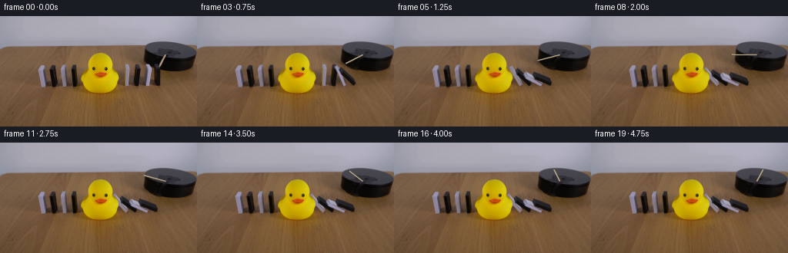
展开代码变化
--- 上一保存版本
+++ 本次保存版本
@@ -203,6 +203,16 @@
overlay_face(canvas,q[inds],texture)
frame=cv2.resize(canvas,(W,H),interpolation=cv2.INTER_AREA)
frame=np.clip(frame,0,255).astype(np.uint8)
+ # Outside swept objects and their shadows, keep every camera pixel fixed.
+ change=erase.copy()
+ cv2.line(change,tuple(np.round(pivot).astype(int)),tuple(np.round(tip).astype(int)),255,3,cv2.LINE_AA)
+ for i in active:
+ q=vertices(blocks[i],aa[i])
+ cv2.fillConvexPoly(change,np.round(cv2.convexHull(q).reshape(-1,2)).astype(np.int32),255,cv2.LINE_AA)
+ change=np.maximum(change,np.uint8(cv2.resize(sh,(W,H),interpolation=cv2.INTER_AREA)>0.001)*255)
+ change=cv2.dilate(change,np.ones((3,3),np.uint8))
+ ca=cv2.GaussianBlur(change.astype(float)/255,(0,0),.35)
+ frame=np.clip(src*(1-ca[:,:,None])+frame*ca[:,:,None],0,255).astype(np.uint8)
# The duck is immobile and closer to the camera than the leaning domino tips.
duck=((src[:,:,0]>145)&(src[:,:,1]>119)&(src[:,:,2]<85)).astype(np.float32)
# Limit the color segmentation to the actual duck silhouette.
候选 04播放与检查图
可观测工具轨迹
实际执行的命令与返回图片。
命令 1exit 0
/bin/bash -lc "ls -la && cat prompt.txt && printf '\\n--- RULES ---\\n' && cat GENERATION_RULES.md"
命令 2exit 0
/bin/bash -lc "cat artifact_io.py && python - <<'PY'
from PIL import Image
im=Image.open('first_frame.png');print(im.size); im.resize((1024,576)).save('.tmp/first_large.png')
PY"命令 3exit 0
/bin/bash -lc "python - <<'PY'
from PIL import Image
im=Image.open('first_frame.png');im.crop((158,44,220,96)).resize((744,624)).save('.tmp/detail.png')
import importlib.util
for p in ['cv2','scipy','numpy','PIL']:
print(p,importlib.util.find_spec(p) is not None)
PY"命令 4exit 0
/bin/bash -lc "python - <<'PY'
from PIL import Image
im=Image.open('first_frame.png');im.resize((1536,864),Image.Resampling.NEAREST).save('.tmp/nearest.png')
PY"命令 5exit 0
/bin/bash -lc "python - <<'PY'
from PIL import Image,ImageDraw
im=Image.open('first_frame.png').resize((1536,864))
d=ImageDraw.Draw(im)
for x in range(158,216,5):
d.line([(x*6,58*6),(x*6,94*6)], fill=(255,50,30),width=1);d.text((x*6,94*6),str(x),(255,20,0))
for y in range(60,95,5):
d.line([(158*6,y*6),(216*6,y*6)],fill=(255,50,30),width=1);d.text((216*6,y*6),str(y),(255,20,0))
im.crop((155*6,55*6,225*6,100*6)).save('.tmp/grid.png')
PY"命令 6exit 0
/bin/bash -lc "python - <<'PY'
from PIL import Image,ImageDraw
im=Image.open('first_frame.png').resize((1536,864),Image.Resampling.NEAREST);d=ImageDraw.Draw(im)
for x in range(160,215,2):
d.line([(x*6,59*6),(x*6,93*6)], fill=(230,40,40),width=1);d.text((x*6,94*6),str(x),(255,20,0))
for y in range(60,94,2):
d.line([(159*6,y*6),(214*6,y*6)],fill=(230,40,40),width=1);d.text((215*6,y*6),str(y),(255,20,0))
im.crop((158*6,58*6,219*6,98*6)).save('.tmp/grid2.png')
PY"命令 7exit 0
/bin/bash -lc "python - <<'PY'
from PIL import Image,ImageDraw
im=Image.open('first_frame.png').crop((158,57,212,94)).resize((1080,740),Image.Resampling.NEAREST)
d=ImageDraw.Draw(im)
for x in range(158,212):
d.line(((x-158)*20,0,(x-158)*20,740),fill=(120,0,0),width=1)
if x%2==0:d.text(((x-158)*20+2,1),str(x),(255,50,30))
for y in range(57,94):
d.line((0,(y-57)*20,1080,(y-57)*20),fill=(120,0,0),width=1)
if y%2==0:d.text((1,(y-57)*20+1),str(y),(255,50,30))
im.save('.tmp/pixels.png')
PY"命令 8exit 0
/bin/bash -lc "cat > generate.py <<'PY'
from pathlib import Path
import math
import numpy as np
import cv2
from PIL import Image, ImageDraw
import artifact_io
ROOT=Path(__file__).resolve().parent
W,H=256,144
S=4
src=np.array(Image.open(ROOT/'first_frame.png').convert('RGB'))
rng=np.random.default_rng(311)
# Cuboids are calibrated directly to the photograph. Units are projected pixels.
blocks=[
dict(p=(163.2,91.2),w=4.05,h=23.4,lean=.8,d=(-1.9,-5.0),white=True),
dict(p=(175.6,91.0),w=4.1,h=22.9,lean=1.3,d=(-1.6,-5.5),white=False),
dict(p=(190.7,91.2),w=4.2,h=22.7,lean=2.3,d=(-3.1,-5.5),white=True),
dict(p=(203.3,90.5),w=4.4,h=22.2,lean=0.,d=(-2.8,-5.7),white=False),
]
def vertices(b,a):
c,s=math.cos(a),math.sin(a)
q=[]
for z in (0,b['h']):
for x,y in ((0,0),(b['w'],0),(b['w'],1),(0,1)):
xx=x*c-z*s; zz=x*s+z*c
q.append((b['p'][0]+xx+b['lean']*zz/b['h']+b['d'][0]*y,
b['p'][1]-zz+b['d'][1]*y-.015*xx))
return np.array(q,np.float32)
# Small removal regions; the untouched table, duck, and other dominoes remain photographs.
objmasks=[]
cleanmask=np.zeros((H,W),np.uint8)
for b in blocks:
q=vertices(b,0)
hull=cv2.convexHull(q).reshape(-1,2)
mm=np.zeros((H,W),np.uint8)
cv2.fillConvexPoly(mm,np.round(hull).astype(np.int32),255)
mm=cv2.dilate(mm,np.ones((3,3),np.uint8))
# The broad soft contact shadows to the left of the standing pieces.
shadow=np.zeros_like(mm)
p=np.array(b['p'])
poly=np.array([p+(-11,-8),p+(-3,-10),p+(5,-3),p+(5,2),p+(-9,-1)],np.int32)
cv2.fillConvexPoly(shadow,poly,255)
mm=np.maximum(mm,shadow)
objmasks.append(mm)
cleanmask=np.maximum(cleanmask,mm)
rodmask=np.zeros((H,W),np.uint8)
cv2.line(rodmask,(207,66),(215,51),255,4,cv2.LINE_AA)
cleanmask=np.maximum(cleanmask,rodmask)
# Inpaint narrow strips using their immediate unoccluded surroundings.
clean=cv2.inpaint(src,cleanmask,4,cv2.INPAINT_TELEA)
# Restore fine wood grain beneath the dominoes with locally aligned samples.
woodmask=cleanmask.astype(np.float32)/255
for y in range(62,95):
for x in range(157,210):
if not cleanmask[y,x]: continue
# The disk silhouette is deliberately preserved above its lower contour.
disk_boundary=66.8+(x-189)*.215 if x>=189 else -100
if x>=190 and y<disk_boundary: continue
sy=min(143,y+36)
sx=int(np.clip(x-4,0,255))
# Match the small warm illumination gradient on the table.
sample=src[sy,sx].astype(float)*np.array([.98,.99,1.0])
clean[y,x]=np.clip(.85*sample+.15*clean[y,x],0,255)
# Local edge feathering conceals the narrow texture grafts.
faces={'front':[0,1,5,4], 'left':[3,0,4,7], 'right':[1,2,6,5], 'top':[4,5,6,7]}
textures=[]
for b in blocks:
q=vertices(b,0)
bt={}
for name in ['front','left','top']:
points=q[faces[name]].copy()
center=points.mean(0)
points=center+(points-center)*.91
# Pull the original face texture into a canonical patch.
dst=np.float32([[0,127],[63,127],[63,0],[0,0]])
mat=cv2.getPerspectiveTransform(points.astype(np.float32),dst)
tex=cv2.warpPerspective(src,mat,(64,128),flags=cv2.INTER_LINEAR)
bt[name]=tex.astype(np.float32)
# Initially hidden face becomes the upper broad face as each piece tips.
yy,xx=np.mgrid[0:128,0:64]
if b['white']:
color=np.array([165.,163.,184.])
gradient=(.95+.065*(1-yy/127)+.055*xx/63)[...,None]
else:
color=np.array([35.,35.,40.])
gradient=(.90+.13*(1-yy/127)+.07*xx/63)[...,None]
noise=cv2.GaussianBlur(rng.normal(0,1,(128,64)).astype(np.float32),(0,0),1)[...,None]
bt['right']=color[None,None,:]*gradient+noise
textures.append(bt)
# The duck interrupts the chain; collisions transmit the impulse to its right-hand neighbors.
def dynamics():
dt=1/600
theta=np.zeros(4); omega=np.zeros(4); awake=np.zeros(4,dtype=bool)
result=[]
for step in range(round(4.75/dt)+1):
t=step*dt
if t>=.14 and not awake[3]:
awake[3]=True; omega[3]=1.15
for i in range(4):
if not awake[i]: continue
omega[i]+=dt*9.4*math.sin(theta[i])
theta[i]+=dt*omega[i]
if i==0:
limit=math.radians(43)
else:
p=theta[i-1]
gap=blocks[i]['p'][0]-blocks[i-1]['p'][0]
v=(blocks[i-1]['w']-gap*math.cos(p))/blocks[i]['h']
limit=p-math.asin(np.clip(v,-1,1))
if theta[i]>limit:
incoming=omega[i]
theta[i]=limit
if i>0 and not awake[i-1]:
awake[i-1]=True
omega[i-1]=max(1.0,incoming*.83)
omega[i]=omega[i-1]*.90 if i>0 else 0
if step%150==0: result.append(theta.copy())
return result
angles=dynamics()
def overlay_face(canvas,poly,texture):
# Counterclockwise exterior surfaces face the camera in this projection.
area=np.sum(poly[:,0]*np.roll(poly[:,1],-1)-poly[:,1]*np.roll(poly[:,0],-1))
if area>=-.1: return
p=poly*S
destination=np.float32([[0,127],[63,127],[63,0],[0,0]])
trans=cv2.getPerspectiveTransform(destination,p.astype(np.float32))
warped=cv2.warpPerspective(np.clip(texture,0,255).astype(np.uint8),trans,(W*S,H*S),flags=cv2.INTER_LINEAR,borderMode=cv2.BORDER_REPLICATE)
mask=np.zeros((H*S,W*S),np.uint8)
cv2.fillConvexPoly(mask,np.round(p).astype(np.int32),255,lineType=cv2.LINE_AA)
alpha=mask.astype(np.float32)/255
canvas[:]=canvas*(1-alpha[:,:,None])+warped*alpha[:,:,None]
def render(t, aa):
if t==0: return src.copy()
active=[i for i,a in enumerate(aa) if a>1.e-5]
erase=np.array(rodmask,copy=True)
for i in active: erase=np.maximum(erase,objmasks[i])
alpha=cv2.GaussianBlur(erase.astype(np.float32)/255,(0,0),.55)
base=src.astype(np.float32)*(1-alpha[:,:,None])+clean.astype(np.float32)*alpha[:,:,None]
canvas=cv2.resize(base,(W*S,H*S),interpolation=cv2.INTER_CUBIC)
# New contact shadows follow the projected prisms.
sh=np.zeros((H*S,W*S),np.float32)
for i in active:
b=blocks[i]; q=vertices(b,aa[i])
ground=q.copy()
for j in range(8):
z=(b['h'] if j>=4 else 0)*math.cos(aa[i])+(b['w'] if j%4 in (1,2) else 0)*math.sin(aa[i])
ground[j,0]-=.23*z
ground[j,1]+=z*.80
hull=cv2.convexHull(ground).reshape(-1,2)
layer=np.zeros_like(sh)
cv2.fillConvexPoly(layer,np.round(hull*S).astype(np.int32),.16,cv2.LINE_AA)
layer=cv2.GaussianBlur(layer,(0,0),2.0*S)
sh=np.maximum(sh,layer)
# Sharp shadow directly at the foot.
cv2.ellipse(sh,(int(b['p'][0]*S),int((b['p'][1]-.8)*S)),(int(4*S),int(1*S)),0,0,360,.16,-1)
canvas*=1-sh[:,:,None]
# Motor-driven clockwise rotation in the horizontal plane of the tabletop.
phi=math.radians(104.7+38*t)
pivot=np.array([215.5,50.5])
tip=pivot+np.array([32.2*math.cos(phi),15.6*math.sin(phi)])
rod=Image.new('RGBA',(W*S,H*S))
d=ImageDraw.Draw(rod)
a=tuple((pivot*S).tolist()); end=tuple((tip*S).tolist())
# Fine dark occlusion and a warm wooden highlight.
d.line([(a[0]+1,a[1]+3),(end[0]+1,end[1]+3)],fill=(22,21,20,100),width=8)
d.line([a,end],fill=(134,119,92,255),width=7)
d.line([(a[0]-1,a[1]-1),(end[0]-1,end[1]-1)],fill=(188,174,143,255),width=5)
d.line([(a[0]-2,a[1]-2),(end[0]-2,end[1]-2)],fill=(205,191,163,180),width=1)
ra=np.array(rod).astype(np.float32); al=ra[:,:,3:]/255
canvas=canvas*(1-al)+ra[:,:,:3]*al
# Rising broad faces are newly revealed as the blocks topple.
for i in active:
b=blocks[i]; q=vertices(b,aa[i])
for name,inds in faces.items():
texture=textures[i][name]
if name=='right':
lighting=.91+.09*math.sin(aa[i])
texture=texture*lighting
elif name=='top': texture=texture*(.98-.10*math.sin(aa[i]))
overlay_face(canvas,q[inds],texture)
frame=cv2.resize(canvas,(W,H),interpolation=cv2.INTER_AREA)
frame=np.clip(frame,0,255).astype(np.uint8)
# The duck is immobile and closer to the camera than the leaning domino tips.
duck=((src[:,:,0]>145)&(src[:,:,1]>119)&(src[:,:,2]<85)).astype(np.float32)
# Limit the color segmentation to the actual duck silhouette.
yy,xx=np.mgrid[0:H,0:W]
duck*=((xx>=103)&(xx<=156)&(yy>=46)&(yy<=102))
duck=cv2.GaussianBlur(duck,(0,0),.22)
frame=np.clip(frame*(1-duck[:,:,None])+src*duck[:,:,None],0,255).astype(np.uint8)
return frame
frames=np.stack([render(k/4,angles[k]) for k in range(20)])
artifact_io.save(frames,ROOT)
Image.fromarray(clean).save(ROOT/'.tmp/clean.png')
print('Angles:', np.round(np.rad2deg(angles),1))
PY
python generate.py"命令 9exit 0
/bin/bash -lc "python - <<'PY'
from PIL import Image
for k in [1,3,6,19]:
Image.open(f'frames/{k:02}.png').resize((1024,576)).save(f'.tmp/frame{k}.png')
PY"命令 10exit 0
/bin/bash -lc "python - <<'PY'
import cv2,numpy as np
from PIL import Image
import runpy
v=runpy.run_path('generate.py')
a=cv2.inpaint(v['src'],v['cleanmask'],4,cv2.INPAINT_TELEA)
Image.fromarray(a).resize((1024,576)).save('.tmp/inpaint.png')
PY"命令 11exit 0
/bin/bash -lc "python - <<'PY'
from PIL import Image
import numpy as np
s=np.array(Image.open('first_frame.png'))
for y in [56,60,63,65,67,69,71,73]:
print(y,[(x,s[y,x].tolist()) for x in [188,190,192,195,198,200,202,205,210,215,220,230,240]])
PY"命令 12exit 0
/bin/bash -lc "cp generate.py .tmp/generate_v1.py
python - <<'PY'
p='generate.py'
s=open(p).read()
a=s.index('# Restore fine wood grain')
b=s.index('# Local edge feathering',a)
s=s[:a]+'''# Reconstruct only the table, with source wood grain and a smoothly fitted
# illumination residual so patch boundaries do not become visible.
yy,xx=np.mgrid[0:H,0:W]
donor=cv2.remap(src,(xx-4).astype(np.float32),np.minimum(yy+36,H-1).astype(np.float32),cv2.INTER_LINEAR,borderMode=cv2.BORDER_REFLECT).astype(np.float32)
disk_edge=52+20*np.sqrt(np.maximum(0,1-((xx-222)/35.0)**2))
disk_edge=np.where(xx<187,-100,disk_edge)
wood_weight=np.clip((yy-disk_edge+.1)/1.4,0,1)
residual=src.astype(np.float32)-donor
# Exclude the motor and duck from the smooth table-illumination estimate.
valid=(cleanmask==0)&(yy>42)&(wood_weight>.999)
valid&=~((xx>103)&(xx<157)&(yy>46)&(yy<103))
from scipy.ndimage import distance_transform_edt
ind=distance_transform_edt(~valid,return_distances=False,return_indices=True)
nearest=residual[ind[0],ind[1]]
correction=cv2.GaussianBlur(nearest,(0,0),2.1)
wood=np.clip(donor+correction,0,255)
clean=np.clip(clean.astype(float)*(1-wood_weight[:,:,None])+wood*wood_weight[:,:,None],0,255).astype(np.uint8)
''' +s[b:]
# replace mask alpha with inpaint only, static restore after shadow
s=s.replace(\" canvas*=1-sh[:,:,None]\\n\",''' canvas*=1-sh[:,:,None]
# Preserve unstruck neighbor faces even where a removed shadow overlaps them.
for i in range(4):
if i in active: continue
q=vertices(blocks[i],0)
m=np.zeros((H*S,W*S),np.uint8)
cv2.fillConvexPoly(m,np.round(cv2.convexHull(q).reshape(-1,2)*S).astype(np.int32),255,cv2.LINE_AA)
m=cv2.dilate(m,np.ones((5,5),np.uint8))
m=cv2.GaussianBlur(m,(0,0),.6*S).astype(np.float32)/255
original=cv2.resize(src,(W*S,H*S),interpolation=cv2.INTER_CUBIC)
canvas=canvas*(1-m[:,:,None])+original*m[:,:,None]
''')
# add blur local objects quality rough edges change overlay masks natural
s=s.replace(\" alpha=mask.astype(np.float32)/255\\n\", \" alpha=cv2.GaussianBlur(mask,(0,0),.30*S).astype(np.float32)/255\\n\")
open(p,'w').write(s)
PY
python generate.py
python - <<'PY'
from PIL import Image
for k in [1,6]:Image.open(f'frames/{k:02}.png').resize((1024,576)).save(f'.tmp/frame_new{k}.png')
PY"命令 13exit 0
/bin/bash -lc "which ffmpeg || true; python - <<'PY'
from PIL import Image
import numpy as np
f=np.stack([np.array(Image.open(f'frames/{k:02}.png')) for k in range(20)])
assert f.dtype==np.uint8 and f.shape==(20,144,256,3)
assert np.array_equal(f[0],np.array(Image.open('first_frame.png')))
print('Validated 20 RGB frames; first frame is pixel-identical.')
PY"命令 14exit 0
/bin/bash -lc "python - <<'PY'
p='generate.py';s=open(p).read();needle=\" # The duck is immobile and closer to the camera than the leaning domino tips.\\n\";s=s.replace(needle,\"\"\" # Outside swept objects and their shadows, keep every camera pixel fixed.
change=erase.copy()
cv2.line(change,tuple(np.round(pivot).astype(int)),tuple(np.round(tip).astype(int)),255,3,cv2.LINE_AA)
for i in active:
q=vertices(blocks[i],aa[i])
cv2.fillConvexPoly(change,np.round(cv2.convexHull(q).reshape(-1,2)).astype(np.int32),255,cv2.LINE_AA)
change=np.maximum(change,np.uint8(cv2.resize(sh,(W,H),interpolation=cv2.INTER_AREA)>0.001)*255)
change=cv2.dilate(change,np.ones((3,3),np.uint8))
ca=cv2.GaussianBlur(change.astype(float)/255,(0,0),.35)
frame=np.clip(src*(1-ca[:,:,None])+frame*ca[:,:,None],0,255).astype(np.uint8)
\"\"\"+needle);open(p,'w').write(s)
PY
python generate.py"视觉工具实际返回图片 1

视觉工具实际返回图片 2
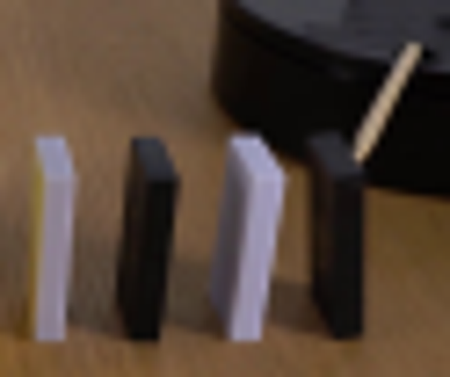
视觉工具实际返回图片 3
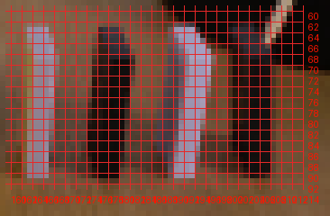
视觉工具实际返回图片 4
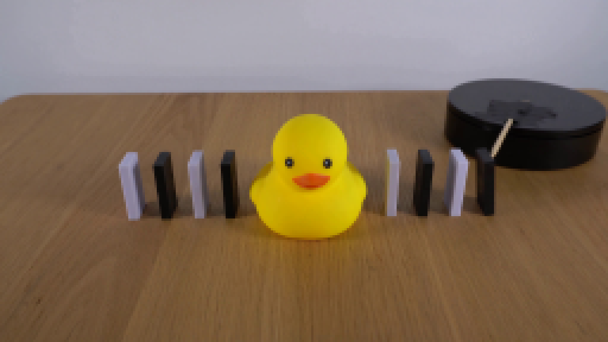
视觉工具实际返回图片 5
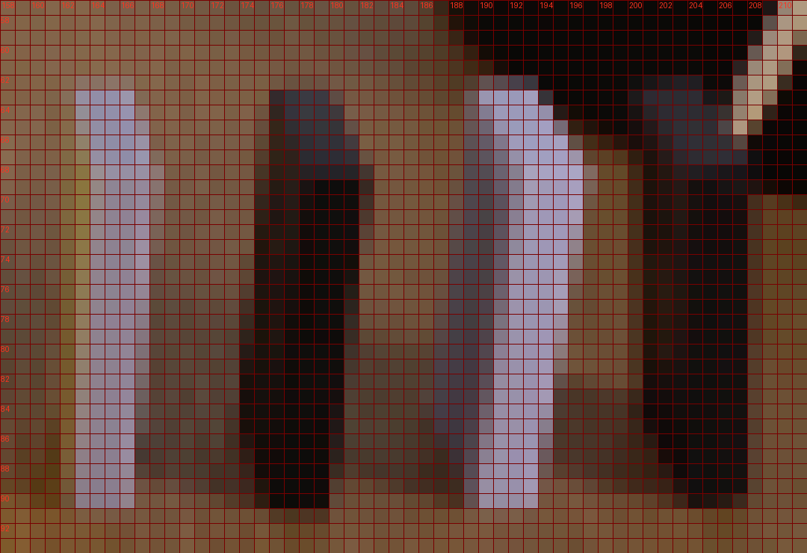
视觉工具实际返回图片 6

视觉工具实际返回图片 7
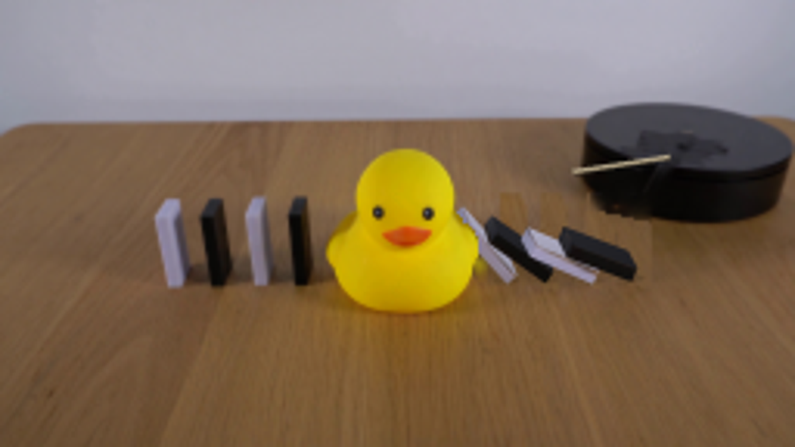
视觉工具实际返回图片 8
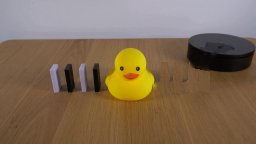
视觉工具实际返回图片 9
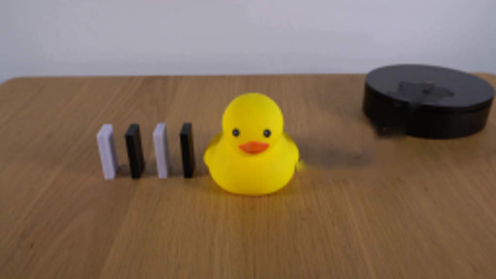
视觉工具实际返回图片 10
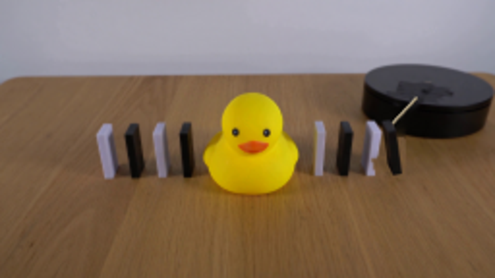
视觉工具实际返回图片 11
视觉工具实际返回图片 12
保存候选 4 份；完成命令 14 次；可验证图片返回 12 张。原始 API 响应与完整日志保留在本地。